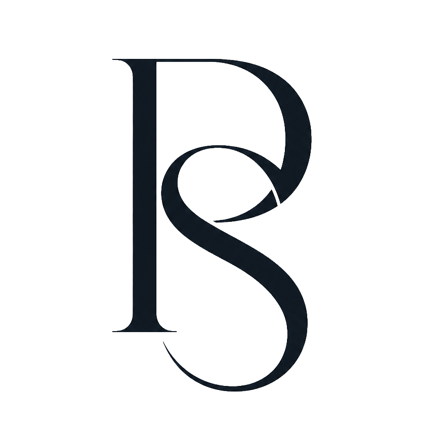
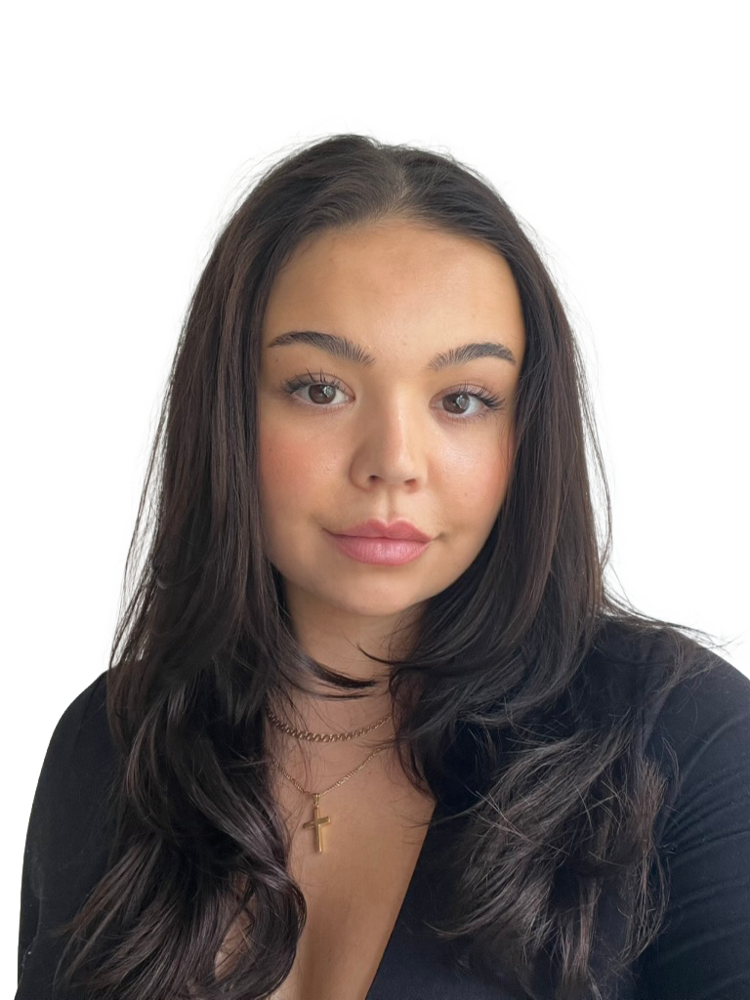

Bachelor of Media & Communication
Academic foundation in communication, media, strategy, campaigns and digital culture.


About me
I’m a Swedish content creator, copywriter and strategist based between Barcelona and Gothenburg, working across content, copy, websites and visual direction.
My work sits between strategy and taste — turning ideas, identity and brand feeling into words, visuals and digital experiences.
Background
Academic foundation in communication, media, strategy, campaigns and digital culture.
HTML, CSS, responsive layouts, visual hierarchy, usability and digital design structure.
Creative studies in Florence with focus on aesthetics, form, space and visual expression.
Skills & languages
Copywriting
Tone of voice
Content strategy
Brand messaging
Campaign storytelling
Social media content
Web design
Visual design
Adobe Creative Suite
Figma
SEO fundamentals
HTML, CSS & JavaScript
Swedish Native
English Fluent
French Fluent
Norwegian Fluent
Spanish Conversational
Italian Conversational
Danish Understanding
Contact
Looking for support with content, copy, websites or social media? I’d love to hear more.
Get in touch